PME, ETI, grands groupes — nous accompagnons des entreprises de tous secteurs et de toutes tailles dans leur démarche de prévention TMS.
2 journées pour la prévention des Troubles Musculo-Squelettiques
Prévenir les Troubles Musculo-Squelettiques (TMS), première cause de maladies professionnelles reconnues en France, auprès de l'ensemble des agents du centre bus, toutes fonctions confondues (tertiaires, exploitation, maintenance).
Le programme combine sensibilisation théorique et actions pratiques directement applicables sur le terrain, à travers plusieurs ateliers complémentaires :
Résultats :
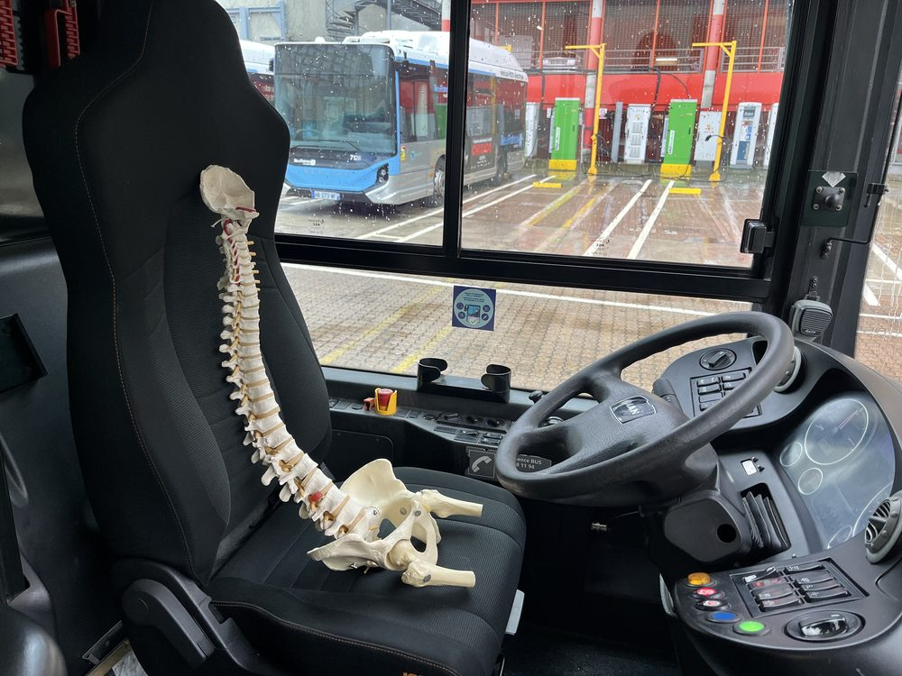
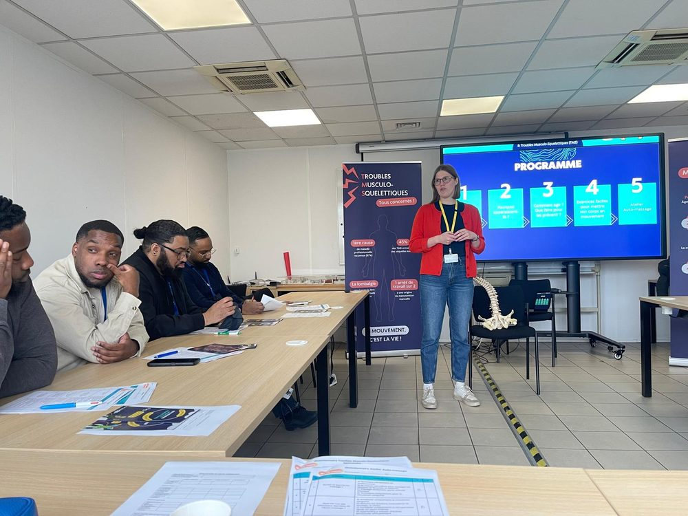
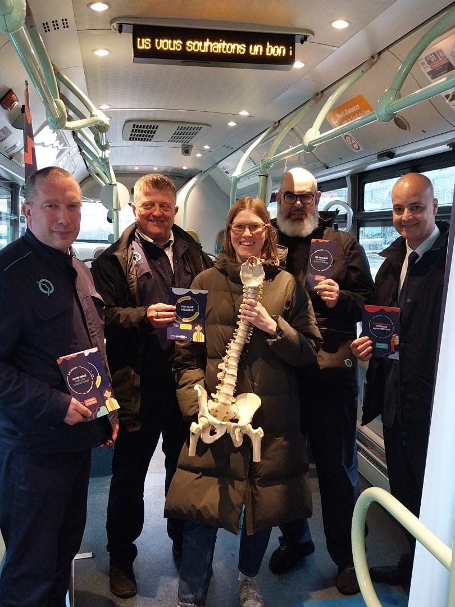
Eure et Loir (28), Indre et Loire (37), Loir et Cher (41), Maine et Loire (49), Sarthe (72), Essonne (91).
Ateliers "Économie Gestuelle et Posturale" (EGP)personnes formées
Tournée répartie sur 2 semaines dans les différentes agences du groupe
Objectifs :
Sensibiliser l'ensemble des collaborateurs — qu'ils occupent des postes sédentaires ou des postes de manutention — aux gestes et postures essentiels pour préserver durablement leur santé.
À travers des ateliers d'Économie Gestuelle et Posturale adaptés à chaque typologie de métier, l'objectif est de :
Résultats :
Une opération d'envergure réussie, avec une belle mobilisation des équipes !
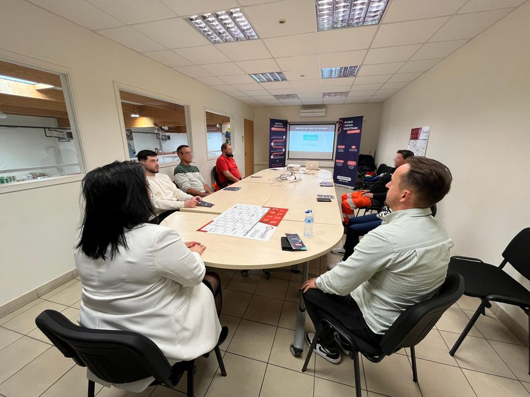
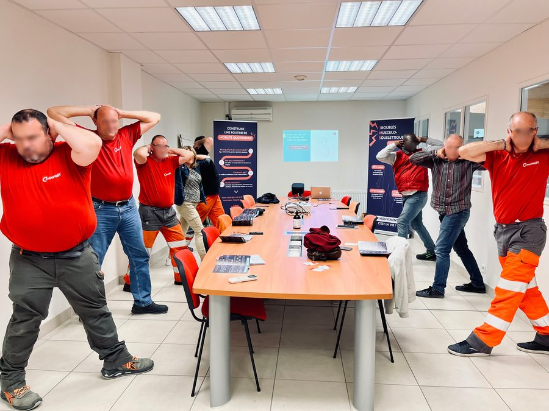
Trois ateliers d'Économie Gestuelle et Posturale (EGP) réalisés auprès des équipes sédentaires.
Objectif : Prévenir les TMS en environnement de bureau en s'appuyant sur une approche concrète, interactive et entièrement personnalisée aux habitudes et contraintes de chaque collaborateur.
L'objectif est de permettre à chacun de :
À l'issue de la formation, les collaborateurs sont sensibilisés, impliqués et mieux armés pour faire face aux contraintes du travail sédentaire et aux situations génératrices de stress.
Ils repartent avec :
Pour l'entreprise, cela se traduit par des collaborateurs plus autonomes, plus sereins et plus performants, capables de prévenir les douleurs avant qu'elles ne s'installent.
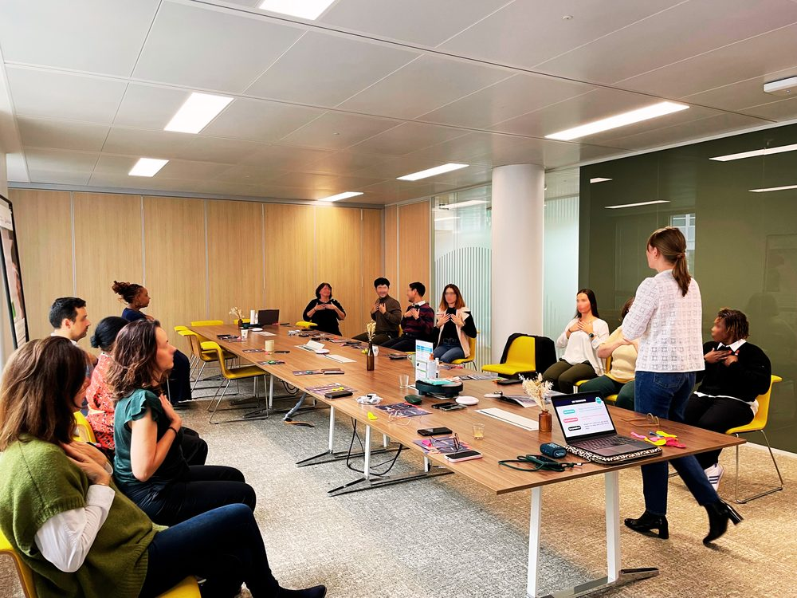
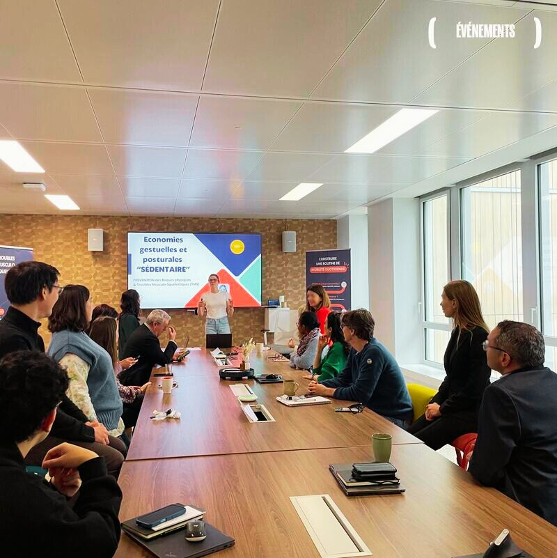
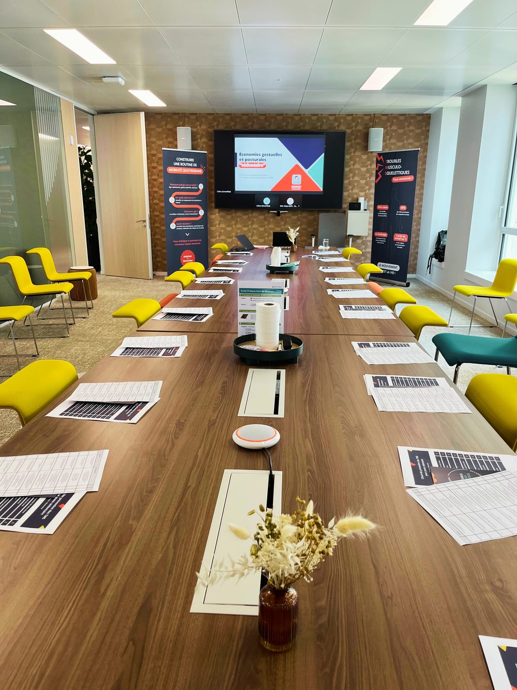
Réalisation de plusieurs ateliers thématiques de prévention
Objectifs :
Résultats :
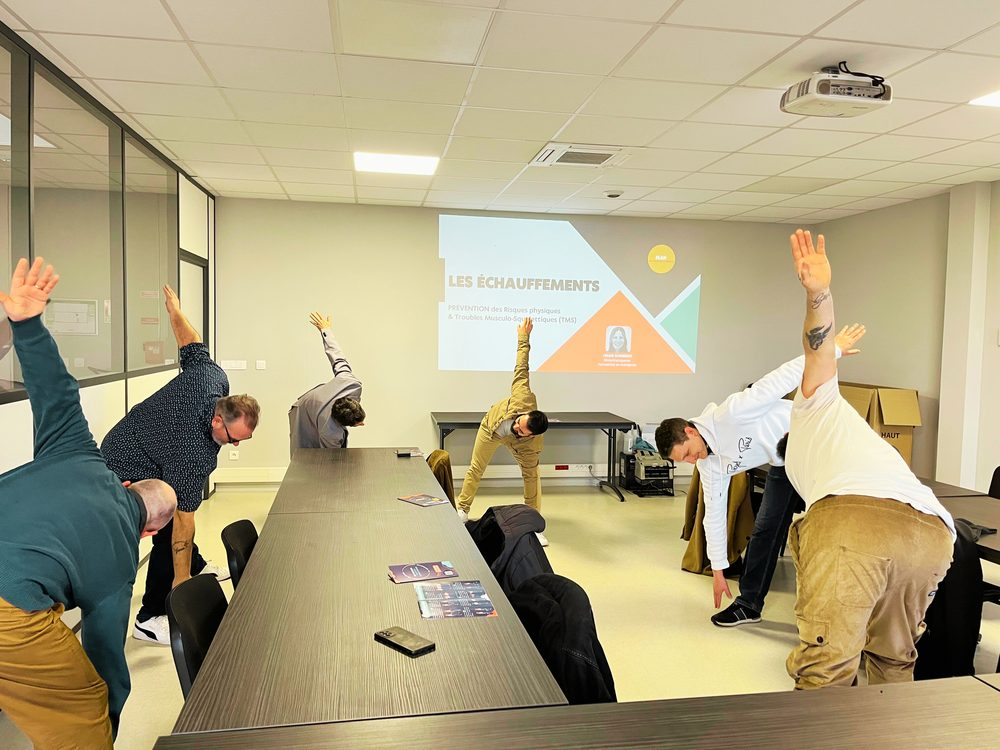
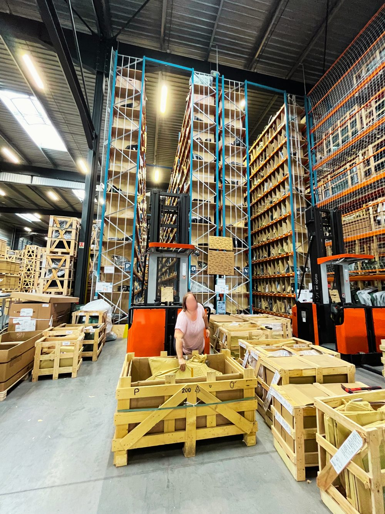
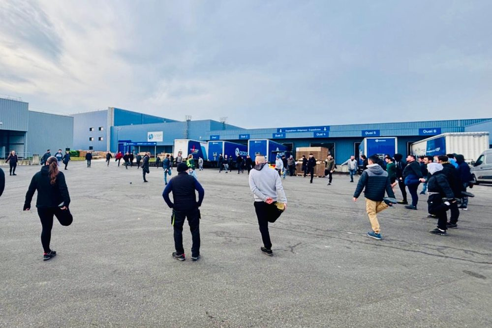
Logistique, agroalimentaire, automobile, packaging
Banques, assurances, conseil, IT, administration
Cliniques, EHPAD, aide à domicile, laboratoires
Construction, travaux publics, transport routier
Grande distribution, retail, e-commerce
Hôtels, restaurants, traiteurs, collectivités
« La formation a été très concrète et adaptée à nos postes de travail. Nos opérateurs ont apprécié l'intervention directe sur leurs gestes réels. Les douleurs déclarées ont nettement diminué dans le mois suivant. »
« En tant que DRH, je cherchais une solution qui s'intègre dans notre DUERP et qui soit finançable OPCO. UP TO MOVE a répondu à ces deux exigences tout en proposant une qualité pédagogique bien au-dessus de ce que nous avions eu jusque-là. »
« Le fait que les formateurs soient kinésithérapeutes fait toute la différence. Ils ont su adapter leurs recommandations aux pathologies existantes de certains de nos salariés. Très professionnel. »
Devis personnalisé gratuit sous 48h. Intervention possible partout en France.